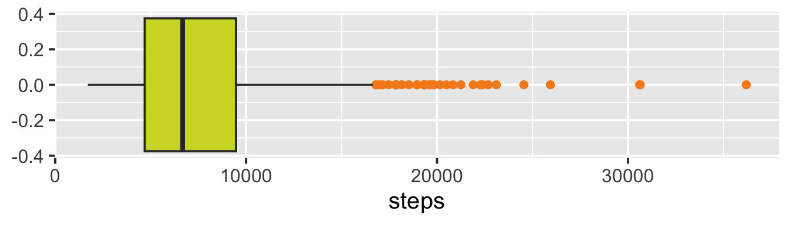
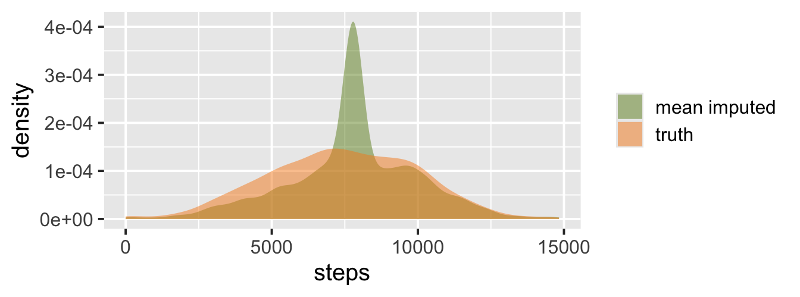

library(tidyverse)
vitals <- read_csv("data/s6_vitals.csv")
users <- read_csv("data/s6_users.csv")
steps_sim <- read_csv("data/s6_steps_sim.csv")Types, Anomalies, and Missingness
Data cleaning 2 · Session 6
Slides
Parsing mixed dates, finding sentinels, outliers by domain rules and plots, validity rules as code, missing-data mechanisms, and judging an imputation by whether it recovers the distribution
Welcome
TARGET CLOCK (core ends at 1:05; FLEX slides add up to 5 minutes, skip them if behind): Welcome 0:00-0:05 | Dates and types 0:05-0:13 | Sentinels and missing markers 0:13-0:19 | Bounds and outliers 0:19-0:32 (Task 1) | Validity rules 0:32-0:42 (Task 2) | Missingness 0:42-0:52 | Imputation 0:52-1:02 (Task 3) | Wrap-up 1:02-1:05.
This session is trimmed on purpose: about 13% less than a full 75 minutes. Cut material (time zones, NaN vs NA, Mahalanobis distance, pointblank) lives in FLEX slides, the handout, and the Appendix.
Exactly THREE hands-on tasks (blue boxes): Task 1 CODE IT (sentinels and impossible values, about 5 min), Task 2 PROMPT IT (validation rules from a dictionary, about 6 min), Task 3 ASSESS IT (an imputation, about 5 min). Everything else is teaching. The opening Recall slide is silent thinking, not a task. Students need R and an AI assistant open. The data files are in the course site (data/s6_*.csv); students read them with read_csv().
FLEX slides, skip if behind: “Time zones”, “NaN is not NA”, “Mahalanobis distance”.
If you are still behind at 0:32 after skipping FLEX slides, also shorten “Look in context” and “Odd only in combination”: the handout covers both.
Press S for speaker view.
Recall (30 seconds, silent)
- What does
"[^\\x00-\\x7F]"find? - Why is
parse_number()risky on"165 lb"and"72 kg"? - Why do we use a lookup table instead of a long
ifelse()?
. . .
- Any character outside plain ASCII: lookalikes, accents
- It drops the unit, so pounds and kilograms mix
- A reviewer can read it, and
anti_join()shows what is unmapped
Retrieval practice from Session 5. 30 seconds of silent thinking, then reveal. Do not discuss at length.
Today’s route
- Types: dates arrive as text in many formats
- Sentinels: numbers that mean “nothing”
- Outliers: domain rules first, plots second
- Validity rules: write them as code
- Missingness: who is missing, and why does it matter?
- Imputation: judge it by the distribution
Hands-on today: code it, prompt it, assess it.
Set up for the three tasks
The files are on the course site, in the data/ folder. Have your AI assistant open too.
Where we left off
Session 5 fixed text: patterns, lookalikes, categories.
Today is numbers, dates, and holes. The order is the same: flag first, remediate patterns, and only then impute or drop.
AI can fill a hole in one line. It will not tell you who the hole belongs to. That is your job as navigator.
Dates and types
Target: 0:05 to 0:13. The WellSync file has timestamps in several formats, so this is the skill students need most in the lab. Keep it practical: parse with a list of orders, count failures, never guess the ambiguous ones.
Text is not a date
sort(c("10", "9", "100"))#> [1] "10" "100" "9"sort(c("2026-01-10", "2026-01-9", "2026-01-100"))#> [1] "2026-01-10" "2026-01-100" "2026-01-9"A column stored as text sorts, compares, and subtracts as text. Types are part of the model.
One column, many formats
ts_raw#> [1] "2026-01-05 07:30" "01/05/2026 7:30 AM" "5 Jan 2026 07:30"
#> [4] "2026-01-05T07:30:00Z" "Jan 5, 2026" "yesterday"Timestamps from different devices, typed or exported differently.
ymd_hms() parses only what it knows
ymd_hms(ts_raw, quiet = TRUE)#> [1] NA NA
#> [3] NA "2026-01-05 07:30:00 UTC"
#> [5] NA NAsum(is.na(ymd_hms(ts_raw, quiet = TRUE)))#> [1] 5Five of six became NA. No error: the function did what you asked.
. . .
Bug: an AI that stops here has just discarded 83% of the column.
Give it a list of orders
parsed <- parse_date_time(ts_raw, tz = "UTC", quiet = TRUE,
orders = c("Ymd HM", "mdY IMp", "dbY HM", "YmdHMSz", "bdY"))
tibble(ts_raw, parsed, ok = !is.na(parsed))#> # A tibble: 6 x 3
#> ts_raw parsed ok
#> <chr> <dttm> <lgl>
#> 1 2026-01-05 07:30 2026-01-05 07:30:00 TRUE
#> 2 01/05/2026 7:30 AM 2026-01-05 07:30:00 TRUE
#> 3 5 Jan 2026 07:30 2026-01-05 07:30:00 TRUE
#> 4 2026-01-05T07:30:00Z 2026-01-05 07:30:00 TRUE
#> 5 Jan 5, 2026 2026-01-05 00:00:00 TRUE
#> 6 yesterday NA FALSEEach order is a pattern: Y year, m month, d day, HM hour and minute, IMp 12-hour clock with AM/PM.
Count what failed
The check that matters: how many rows did not parse, and why?
tibble(ts_raw, parsed) |>
filter(is.na(parsed))#> # A tibble: 1 x 2
#> ts_raw parsed
#> <chr> <dttm>
#> 1 yesterday NA"yesterday" is not a date. It stays NA and gets flagged. Never fill it in.
The day-month trap
d <- c("01/05/2026", "13/05/2026", "05/05/2026", "02/11/2026")
a <- as.numeric(str_extract(d, "^\\d+"))
b <- as.numeric(str_extract(d, "(?<=/)\\d+"))
tibble(d, ambiguous = a <= 12 & b <= 12 & a != b)#> # A tibble: 4 x 2
#> d ambiguous
#> <chr> <lgl>
#> 1 01/05/2026 TRUE
#> 2 13/05/2026 FALSE
#> 3 05/05/2026 FALSE
#> 4 02/11/2026 TRUE01/05/2026 is January 5 or May 1. Code cannot tell. Ask which locale the device used, then set the order.
Time zones (FLEX)
t <- ymd_hms("2026-01-05 07:30:00", tz = "America/Los_Angeles")
t#> [1] "2026-01-05 07:30:00 PST"with_tz(t, "UTC")#> [1] "2026-01-05 15:30:00 UTC"Same instant, different clock. Store in UTC, convert for display.
FLEX: skip if behind (saves about 1.5 min). force_tz() changes the clock reading and keeps the zone; with_tz() keeps the instant and changes the display. Mixing them up shifts data by hours.
Sentinels and missing markers
Target: 0:13 to 0:19. Adapted from the old sentinel slides. The point: a number can mean “nothing”, and one such number wrecks every summary.
Four kinds of “nothing”
| Looks like | Is it missing? |
|---|---|
NA |
yes: R’s missing value |
NaN |
yes: not a number (0/0) |
"", "n/a", "NULL" |
text pretending to be a value |
-999, -1, 9999 |
a sentinel: a number that means “no data” |
NULL is different: it means “no object” and cannot sit inside a data frame column.
One sentinel, wrong average
summary(vitals$hr)#> Min. 1st Qu. Median Mean 3rd Qu. Max.
#> -999.0 64.0 72.0 41.2 79.0 300.0The mean heart rate is 41. A heart that slow does not exist. The -999s dragged it down.
Look at the extremes
vitals |>
filter(hr < 30 | hr > 220) |>
count(hr, sort = TRUE)#> # A tibble: 3 x 2
#> hr n
#> <dbl> <int>
#> 1 -999 29
#> 2 0 8
#> 3 300 4-999 is a sentinel. 0 and 300 are different: not a code, just impossible.
Turn sentinels into NA
vit_na <- vitals |> mutate(hr = na_if(hr, -999), steps = na_if(steps, -1))
colSums(is.na(vit_na))#> hr steps
#> 29 25When reading a file: read_csv(path, na = c("", "NA", "-999")).
. . .
Bug: is -1 a sentinel? In steps, yes. In a temperature column, it is a real reading. The data dictionary decides, not a regex or an AI.
NaN is not NA (FLEX)
x <- c(1, NA, 0 / 0)
is.na(x)#> [1] FALSE TRUE TRUEis.nan(x)#> [1] FALSE FALSE TRUEis.na() catches both. is.nan() catches only the second.
FLEX: skip if behind (saves about 1 min).
Bounds and outliers
Target: 0:19 to 0:32. Domain rules first (impossible), statistics second (unusual). Interaction 1 (Task 1) comes after the bounds slides.
Impossible first, unusual second
| Question | Tool |
|---|---|
| Can this value exist at all? | Domain bound (a rule you know) |
| Is it far from the rest? | z-score or IQR rule |
| Is it odd only in combination? | Derived feature or distance |
A heart rate of 300 is impossible. A heart rate of 125 is unusual. Different actions.
Fixed bounds: flag, do not delete
vit_na |>
mutate(hr_flag = case_when(is.na(hr) ~ "missing",
between(hr, 30, 220) ~ "ok",
.default = "impossible")) |>
count(hr_flag)#> # A tibble: 3 x 2
#> hr_flag n
#> <chr> <int>
#> 1 impossible 12
#> 2 missing 29
#> 3 ok 959Keep the row. Keep the flag. A later step decides what to do.
Task 1: code it
vitals has sentinels (-999, -1) and impossible heart rates (0, 300).
Code it (5 min). 1. Turn the sentinels into NA. 2. Flag heart rates outside 30 to 220 as "impossible". 3. Compare the mean heart rate before and after, using only "ok" rows.
TASK 1 of 3 (CODE IT). Give 5 minutes; walk the room. Expected: vit <- vitals |> mutate(hr = na_if(hr, -999), steps = na_if(steps, -1), hr_flag = case_when(is.na(hr) ~ “missing”, between(hr, 30, 220) ~ “ok”, .default = “impossible”)); then mean(vitals$hr) is 41.2 (raw) and vit |> filter(hr_flag == “ok”) |> summarize(mean(hr)) is about 72. Counts: 29 missing (30 sentinels, one of which was overwritten by another planted value), 12 impossible (8 zeros and 4 values of 300), 959 ok. Steps: 25 sentinels. Common stuck points: case_when order (the NA check must come first, or between(NA) returns NA and the row falls to .default), using == instead of na_if, deleting rows instead of flagging them, mean() returning NA because the NAs were not dropped (na.rm = TRUE, and say so). Early finishers: add a flag for steps above 60000 and count it. Land the point: three different problems share one column: a sentinel, an impossible value, and a plausible one. Each needs a different decision, which is why we flag instead of overwrite.
The answer
c(raw = mean(vitals$hr),
clean = mean(hr_ok$hr))#> raw clean
#> 41.20000 71.91971count(vit, hr_flag)#> # A tibble: 3 x 2
#> hr_flag n
#> <chr> <int>
#> 1 impossible 12
#> 2 missing 29
#> 3 ok 959. . .
Bug: the raw mean was off by 30 bpm, from sentinels alone.
z-scores: how far from the rest?
\[z = \frac{x - \bar{x}}{s}\]
For roughly bell-shaped data, about 0.3% of values are beyond \(|z| > 3\).
nrow(hr_ok)#> [1] 959c(expected = round(0.0027 * nrow(hr_ok), 1),
found = sum(abs(zs(hr_ok$hr)) > 3))#> expected found
#> 2.6 5.0Close to what a bell curve gives: nothing alarming here.
The IQR rule
A value is “unusual” if it is beyond 1.5 x IQR from the quartiles. This is the rule a boxplot uses.
ggplot(steps_ok, aes(x = steps)) +
geom_boxplot(fill = "#cfd82d", outlier.color = "#f68b1f")
z or IQR? It depends on the shape
tibble(variable = c("hr (bell-shaped)", "steps (skewed)"),
z_beyond_3 = c(sum(abs(zs(hr_ok$hr)) > 3), sum(abs(zs(steps_ok$steps)) > 3)),
iqr_rule = c(sum(iqr_flag(hr_ok$hr)), sum(iqr_flag(steps_ok$steps))),
n = c(nrow(hr_ok), nrow(steps_ok)))#> # A tibble: 2 x 4
#> variable z_beyond_3 iqr_rule n
#> <chr> <int> <int> <int>
#> 1 hr (bell-shaped) 5 8 959
#> 2 steps (skewed) 14 32 975Skewed data flags many “outliers” on the long tail. Rare is not wrong.
Look in context
- Impossible? A bound says so: flag as an error.
- Plausible but extreme? Keep it: it may be your most interesting data.
- Repeated? The same odd value many times: look for a code, not a person.
. . .
Outliers are questions, not verdicts. Flag, look, document.
Odd only in combination
hw |> filter(id == 501) |> select(h, w, zh, zw, bmi, zb)#> # A tibble: 1 x 6
#> h w zh zw bmi zb
#> <dbl> <dbl> <dbl> <dbl> <dbl> <dbl>
#> 1 190 45 2.17 -2.07 12.5 -3.73Height and weight each look normal: \(|z| < 3\). But BMI is 12.5, far below normal.
. . .
A derived feature can catch what each column alone cannot.
Mahalanobis distance (FLEX)
hw |> filter(md > qchisq(.999, 2)) |> select(id, h, w, md)#> # A tibble: 1 x 4
#> id h w md
#> <int> <dbl> <dbl> <dbl>
#> 1 501 190 45 27.7One distance for several variables at once. It accounts for how they move together. Cutoff: \(\chi^2_2\) at 99.9%, about 13.8.
FLEX: skip if behind (saves about 1.5 min). Assumes roughly multivariate normal data. It flags the one planted case (height 190, weight 45), which no single-variable z-score does.
Validity rules
Target: 0:32 to 0:42. Quality dimensions, then rules as code, then Task 2 (PROMPT IT). Keep the dimensions slide to about one minute.
Dimensions of data quality
| Dimension | The question |
|---|---|
| Validity | Does it follow the rules? |
| Accuracy | Is it close to the truth? |
| Consistency | Does it agree with itself and other tables? |
| Uniformity | Same units, same format? |
| Completeness | Is everything we need here? |
A value can be valid and still wrong: 120 is a valid heart rate that may be false.
Validity rules you can write as code
| Rule type | Example |
|---|---|
| Data type | age is numeric |
| Range | age between 0 and 120 |
| Mandatory | id is never NA |
| Unique | id appears once |
| Set membership | device is watch, band, or ring |
| Pattern | zip is exactly 5 digits |
| Cross-field | end is not before start |
Rules become counts
users |>
summarize(
id_missing = sum(is.na(id)),
age_range = sum(!between(age, 0, 120), na.rm = TRUE),
device_set = sum(!device %in% c("watch", "band", "ring")),
zip_pattern = sum(!str_detect(zip, "^\\d{5}$"), na.rm = TRUE)
) |>
pivot_longer(everything(), names_to = "rule", values_to = "failing")#> # A tibble: 4 x 2
#> rule failing
#> <chr> <int>
#> 1 id_missing 1
#> 2 age_range 2
#> 3 device_set 2
#> 4 zip_pattern 2A table of failing counts is a report you can rerun on every new file.
Task 2: prompt it
Rules for users (from the data dictionary):
id: never missing, unique · age: 0 to 120 · device: watch, band, ring · zip: 5 digits · end not before start
Prompt it (6 min). 1. Count by hand the failing rows per rule. 2. Prompt your AI for check_rules(df): one row per rule, with the failing count. It must not change the data. 3. Run it. Do your counts match?
TASK 2 of 3 (PROMPT IT). Give 6 minutes: about 2 for the hand count, 2 for prompting, 2 for running and comparing. Expected failing counts (users has 10 rows): id missing 1; id duplicated 1 (the second 3); age out of range 2 (151 and -2; the NA age is not out of range, it is missing); device not in set 2 (“Watch” with a capital, and “phone”); zip not 5 digits 2 (“9720” and “97201-1234”; the NA zip is missing, not malformed); end before start 4. A good prompt: pastes the dictionary rules as text, says the function takes a data frame and returns a tibble with columns rule and n_failing, forbids modifying or dropping rows, says to handle NA explicitly (and say how), and asks for dplyr only. Where it goes wrong: the AI counts NA as failing (or as passing) without saying so; counts BOTH copies of a duplicate id (2 instead of 1) or flags the first one; uses a case-insensitive device check so “Watch” passes; returns the cleaned data instead of the report; or pulls in a package nobody has. The hand count exists to catch exactly these. Land the point: when the counts differ, the DISAGREEMENT is the finding. Decide which count is right, then write that decision into the prompt.
The answer
users |>
summarize(
id_missing = sum(is.na(id)),
id_duplicated = sum(duplicated(id[!is.na(id)])),
age_range = sum(!between(age, 0, 120), na.rm = TRUE),
device_set = sum(!device %in% c("watch", "band", "ring")),
zip_pattern = sum(!str_detect(zip, "^\\d{5}$"), na.rm = TRUE),
end_early = sum(end < start)
)#> # A tibble: 1 x 6
#> id_missing id_duplicated age_range device_set zip_pattern end_early
#> <int> <int> <int> <int> <int> <int>
#> 1 1 1 2 2 2 4Missingness
Target: 0:42 to 0:52. Mechanisms, then diagnosis by group comparison, then the cost of dropping rows. We use the steps_sim data, where we know the truth, to SHOW what real data would never show. Say that out loud.
Why is it missing?
| Type | Meaning | Example |
|---|---|---|
| Structural | cannot exist | “last pregnancy date” for a man |
| MCAR | unrelated to anything | a random sync failure |
| MAR | related to other columns | old devices drop steps |
| MNAR | related to the missing value itself | heart rate dropped when it is high |
Real data is rarely MCAR. The mechanism decides what is safe to do.
Diagnose: is missingness the same everywhere?
steps_sim |>
summarize(missing = mean(is.na(steps)), n = n(), .by = device)#> # A tibble: 2 x 3
#> device missing n
#> <chr> <dbl> <int>
#> 1 new 0.0798 1203
#> 2 legacy 0.512 797Legacy devices lose 51% of steps, new devices 8%. That is not random.
. . .
You can describe this pattern. You cannot prove the cause from the file.
Drop the rows? Look at who is left
steps_sim |>
summarize(all_rows = mean(device == "legacy"),
complete_rows = mean(device[!is.na(steps)] == "legacy"))#> # A tibble: 1 x 2
#> all_rows complete_rows
#> <dbl> <dbl>
#> 1 0.398 0.260Legacy devices were 40% of users, but only 26% of complete rows.
. . .
Bug: dropping rows with NA removes legacy users first. The model then learns mostly from new-device users.
MNAR leaves no trace
If heart rate goes missing because it was high, no other column shows it.
Only context can raise the suspicion: how does the sensor behave when the wearer is exercising?
What you can do: ask the source, compare with another source, or test how much the answer changes under different assumptions (a sensitivity analysis).
Imputation
Target: 0:52 to 1:02. Options, then why mean imputation fails, then mice, then Task 3 (ASSESS IT). The simulation lets us score the methods against the truth; with real data students compare distributions and group means instead.
Options, and the rule of thumb
| Option | When |
|---|---|
| Drop rows | few missing (under about 5 to 10%) and MCAR |
| Drop the variable | mostly missing, little value |
| Impute | MAR, and the variable is a predictor |
| Declare unusable | too much missing, or MNAR with no way to check |
Never impute the label or the outcome you are trying to predict.
Mean imputation: the tempting one
mean_imp <- steps_sim |>
mutate(steps = if_else(is.na(steps), mean(steps, na.rm = TRUE), steps))
c(true_sd = sd(steps_sim$steps_true), after_mean_imp = sd(mean_imp$steps))#> true_sd after_mean_imp
#> 2564.128 2193.206The mean stays put. The spread shrinks, because one value now fills 25% of the column.
What it does to the shape
bind_rows(truth = steps_sim |> transmute(steps = steps_true),
`mean imputed` = mean_imp |> select(steps), .id = "version") |>
ggplot(aes(x = steps, fill = version)) +
geom_density(alpha = 0.5, color = NA) +
scale_fill_manual(values = c("#6d8d24", "#f68b1f"), name = NULL)
Multiple imputation with mice
library(mice)
dat <- steps_sim |> select(steps, device, age) |> mutate(device = factor(device))
imp <- mice(dat, m = 5, method = "pmm", donors = 20, printFlag = FALSE, seed = 531)m = 5: five completed datasets, to carry the uncertaintypmm: fill each hole with an observed value from a similar row- Analyze each dataset, then pool
Judge it by the distribution
stats <- \(x) c(mean = mean(x), sd = sd(x))
pooled <- sapply(1:5, \(i) stats(complete(imp, i)$steps))
rbind(truth = stats(steps_sim$steps_true),
`drop rows` = stats(na.omit(steps_sim$steps)),
`mean imputed` = stats(mean_imp$steps),
`mice (pooled)` = rowMeans(pooled)) |> round()#> mean sd
#> truth 7419 2564
#> drop rows 7791 2536
#> mean imputed 7791 2193
#> mice (pooled) 7404 2604. . .
Real data has no truth column. There you compare distributions and group means before and after, never single imputed values.
Task 3: the AI’s answer
Asked: “Fill in the missing steps so the column is complete.”
steps_sim |>
mutate(steps = if_else(is.na(steps), mean(steps, na.rm = TRUE), steps)) |>
summarize(mean = mean(steps), sd = sd(steps), missing = sum(is.na(steps)))#> # A tibble: 1 x 3
#> mean sd missing
#> <dbl> <dbl> <int>
#> 1 7791. 2193. 0The AI then wrote: “No missing values remain, and the mean is unchanged, so no bias was introduced.”
Task 3: assess it
Assess it (5 min). Run it. Compare with steps_true and with the group means by device. Read, Run, Restate.
- Is the claim “no bias” true? Check two things.
- What happened to the spread?
- What does it do to legacy users?
- What would you ask for instead?
TASK 3 of 3 (ASSESS IT). Give 5 minutes. Findings: (1) The mean is unchanged BY CONSTRUCTION (we filled with the mean of the observed values), so “unchanged” proves nothing. But the observed values over-represent new devices (74% of the complete rows), so the mean the AI preserved (about 7791) is already biased relative to the truth (about 7419). Check the group means by device: after mean imputation both groups collapse toward the overall mean. (2) The sd falls (about 2193 vs 2564 truth): the column looks tidier than reality, and every later interval will be too narrow. (3) Legacy users have a true mean of about 5676 steps; mean imputation gives all of their missing rows about 7791, so legacy users appear to walk more than they do, which would flow into any model or score. (4) A better prompt: “The steps are missing more often for legacy devices. Use mice with device and age as predictors, 5 imputations, pmm. Then compare the mean and sd of steps, overall and by device, before and after imputation, and report any group whose mean moves by more than 5%.” Restate: the AI “completed” the column and certified itself. The claim sounds like a check and is not one.
What was wrong
- “Unchanged mean” is guaranteed by the method, so it proves nothing
- That mean is already biased: legacy devices are under-represented
- The spread shrinks: intervals will be too narrow
- Legacy users are filled with the new-device average
. . .
A complete column is not a correct column. Compare distributions and groups.
Wrap-up
Target: 1:02 to 1:05.
Four things to remember
- Parse with a list of orders, count the failures, and never let code guess an ambiguous date.
- Impossible first, unusual second. Sentinels and bounds, then z or IQR. Flag, do not delete.
- Rules are code. A table of failing counts is a report you can rerun.
- Missingness has a pattern. Check who is missing before you drop or fill, and judge imputation by the distribution.
Next up
Wed 11/25, Session 7: the cleaning lab kickoff. That is the Wednesday before Thanksgiving, so it is designed to work on your own schedule.
The handout has the full explanations, extra practice, and the pointblank appendix.
Appendix
Unit tests with testthat
library(testthat)
test_that("heart rate is in range after cleaning", {
expect_true(all(between(clean$hr, 30, 220), na.rm = TRUE))
expect_equal(sum(clean$hr == -999, na.rm = TRUE), 0)
})A failing test stops the script. Run it after every cleaning step.
Validation reports with pointblank (not run)
# install.packages("pointblank") # once
library(pointblank)
users |>
create_agent() |>
col_vals_between(age, 0, 120, na_pass = TRUE) |>
col_vals_in_set(device, c("watch", "band", "ring")) |>
col_vals_regex(zip, "^\\d{5}$", na_pass = TRUE) |>
interrogate()Same idea as check_rules(), with a formatted report.